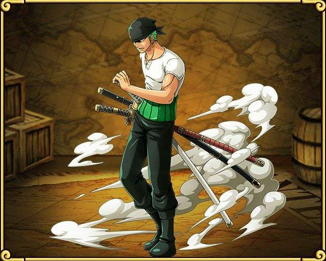

| 时期 |
剧情梗概 |
|
| 1.东海篇 |
蒙奇·D·路飞童年时受到海贼“红发”杰克斯的启蒙，自小就立志要成为“海贼王”。17岁时他出海之后，接续遇见了海贼猎人罗罗亚·佐罗、航海士奈美、狙击手撒谎布、厨师文斯莫克·山智等人并结为伙伴。他们组成了草帽海贼团准备进入伟大的航道来到了罗格镇。
离开罗格镇后，一行人在伟大航道的入口“颠倒山”之前以各自的梦想立誓，跨越颠倒山之后进入了伟大航道，展开下一段冒险。 |
 |
| 2.伟大的航路突入篇&冬岛篇 |
草帽海贼团一行人来到伟大航道、在威士忌山峰遇到卧底在秘密犯罪组织巴洛克华克的阿拉巴斯坦王国公主奈菲特·薇薇，从公主口中得知阿拉巴斯坦正处于水深火热之中；
以及王下七武海‘Mr.0’鳄鱼的阴谋后，路飞决定帮助这位公主。在途中前往岛屿“小花园”与巴洛克华克的部分成员开战，并在旅途中为了治好在小花园生病的奈美去了磁鼓岛并增添一名船医伙伴多尼多尼·乔巴。 |
| 3.阿拉巴斯坦篇 |
抵达阿拉巴斯坦后，当地因为鳄鱼的煽动爆发内战，路飞最后击败鳄鱼，内战亦随之结束。其后薇薇向路飞等人道别，而原巴洛克华克副社长妮古·罗宾，因失去人生目标，以考古学家的身份加入了草帽海贼团。 |
| 4.空岛篇 |
离开阿拉巴斯坦王国之后，草帽海贼团撞见一艘从天而降的大船，同时纪录指针竟然向上指向天空。对空岛产生兴趣的路飞靠着上升海流前往空岛。误入了空岛统治者“神”艾尼路的领地，草帽海贼团、神的军团、以及领地原住民“香狄亚”展开激战，艾尼路最终被击败，而空岛居民和香狄亚一族长达400年的战争也终止。 |
|
| 5.长环长岛篇 |
草帽海贼团遇见专门以Davy Back Fight游戏抢夺其它海贼团船员的“银狐”弗克西，船医乔巴被其抢走，两个海贼团展开对决。 |
| 6.水之七岛篇 |
为修缮伤痕累累的前进梅利号，草帽海贼团来到以造船业闻名的水之七岛，却得知梅莉号已经无法修复的消息，撒谎布又惨败给拆船流氓弗兰奇，因而离团。另一方面，罗宾遇见了政府机关CP9，由于害怕过去发生在自己故乡的悲剧重演在草帽海贼团上，因此自愿被CP9带走。而撒谎布又因为不满路飞换掉梅利号的决定而决定离开，草帽海贼团陷入分崩离析的危机。 |
| 7.艾尼爱斯大厅篇 |
草帽海贼团前往司法岛救回罗宾，与世界政府底下的CP9部队全面对决，最后救回罗宾，撒谎布也回到团里。路飞以火葬仪式为大限已至的梅利号送行，而弗兰奇用当初偷来的2亿贝里建造一艘新船千里阳光号，继续出海冒险，而弗兰奇也以船匠的身份加入海贼团。 |
| 8.恐怖三桅帆船篇 |
草帽海贼团踏入魔幻的三桅帆船地带，遇见神秘的骷髅人布鲁克，并与王下七武海之一的月光·摩利亚产生冲突。最后路飞击败了摩利亚，布鲁克也以音乐家的身份加入草帽海贼团。 |
| 9.香波地诸岛篇 |
草帽海贼团进入伟大航道前半段的最末端香波地诸岛，和世界贵族天龙人起了冲突，之后遇到海军大将黄猿、战桃丸以及改造人攻击，到最后巴索罗谬·大熊利用果实帮助草帽海贼团逃脱，把各个船员击飞至不同的岛屿。 |
 |
| 10.女人岛篇 |
被击飞至女人岛的路飞遇见岛上的“海贼女帝”波尔·汉库珂，又得知自己的兄长“火拳”波特夹斯·D·艾斯要被处决，便请蛇姬将自己偷渡至海底大监狱“因佩尔”。 |
| 11.因佩尔篇 |
路飞在因佩尔遇见过去的敌人(“小丑”巴奇、以鳄鱼为首的巴洛巴华克部分成员)等人，众人为达成各自的目的，分别先后集结组成联盟后展开越狱行动，最后路飞来到处刑的场所海军本部马林梵多。 |
| 12.顶点战争/马林梵多篇 |
路飞及越狱同伴、以及为了救艾斯而来的白胡子海贼团、海军的三大将以及众多海军展开了“顶点战争”。战争最后由“红发”杰克斯出面调停而收场，但遗憾的是艾斯和白胡子皆殒命于战场。战争结束后，失去了哥哥艾斯并深感自身实力不足的路飞，在“冥王”雷利的建议下给伙伴留下了讯息，之后展开了为期两年的霸气修行之旅。 |
| 13.前往新世界&鱼人岛篇 |
历经两年修行后重逢的草帽海贼团为了前往新世界，而出发迈向位于海底10,000米以下处的“鱼人岛”。他们遇到甚平并得知鱼人岛的悲剧历史，原本鱼人岛继承已故王妃的想法、渐渐地接近与人类和平共处的理想，但是由霍迪·琼斯所率领的新鱼人海贼团却粉碎了这个美梦。草帽海贼团挺身阻止霍迪所率领的“新鱼人海贼团”，并与白星公主为首的鱼人与人类之间开始建立新的羁绊。 |
| 14.班克禁区篇 |
草帽海贼团与新任王下七武海特拉法尔加·D·瓦鉄尔·罗相遇，路飞接受罗的提议，组成了“海贼同盟”，目标是“四皇”之一的“百兽”盖德。他们靠着这强力的同盟来对抗在班克禁区制造人工恶魔果实的凯撒·库朗。 |
|
| 15.德莱斯罗兹篇 |
草帽海贼团和罗潜入到唐吉诃德·多弗拉门戈治理下的王国“德莱斯罗兹”，与多弗拉门戈旗下人马展开对决，期间与革命军参谋总长的义兄萨波重逢，在击败多弗拉门戈后，德莱斯罗兹的悲剧就此结束。而作为台面下引路人的多弗拉门戈的垮台，也使得世界局势开始出现大幅变化。 |
| 16.佐乌篇 |
路飞等人到佐乌国家与奈美等人会合，但此国家却已呈现溃灭状态。一行人追查发生在这个国家的秘密，却意外发现山智出身为杀手家族。路飞一行人为了阻止其结婚，正在思考救回山智的方法时，意外得知了和之国光月一族的秘密。路飞等人得知这件惊人事实，于是将下一个击倒的目标锁定为四皇“百兽”盖德。路飞、佐罗与和之国光月一族及佐乌的住民为各自的目的分组团队。 |
| 17.圆蛋糕岛篇 |
路飞团队前往四皇“BIG
MOM”夏洛特·玲玲所在的“万国”蛋糕岛准备夺回要结婚的山智。路飞等人理解山智与家族联姻的真正理由，再度和甚平相会，并与想要暗杀BIG |
| 18.世界会议篇 |
世界政府加盟国里作为代表的50个国家，再度前往“圣地”马力乔亚召开每4年一次的世界会议，商讨世界大局政策。 |